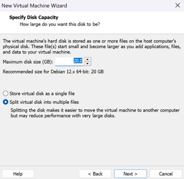
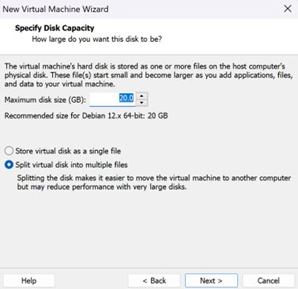

Après l’installation, mettre à jour les paquets.
Puis, ajouter l’utilisateur au groupe sudo pour avoir les privilèges
d’administrateur à partir de l’utilisateur root.
Puis se déconnecter et se reconnecter.
Ensuite, on crée des comptes utilisateurs, administrateur et groupes.
Avec la commande useradd on ajoute un utilisateur.
Avec l’option -m, elle permet la création d’un répertoire personnel de
l’utilisateur et -G sudo , va ajouter l’utilisateur au groupe sudo (ayant des
droits d’administrateurs).
La commande passwd permet de définir un mot de passe pour l’utilisateur.
La création d’un groupe se fait par la commande groupadd. L’option
-aG permet d’ajouter l’utilisateur à un groupe sans le retirer des autres groupes
dont il fait déjà partie.
Pour vérifier, on va consulter dans le fichier /etc/group, si les 2 binômes font
bien partie du groupe BinomeG1.
Enfin, la personnalisation de l’invite de commande :
Avec la commande chsh (change shell), elle permet de modifier le shell par défaut
pour un utilisateur donnée.
Ici on le change en /bin/bash.
Après exécution de cette commande, se déconnecter puis se reconnecter pour voir le changement
effectuée.
Bash permet une personnalisation du prompt plus poussée, tandis que d’autres shells comme
sh ou dash offrent des invites moins personnalisables ( moins
d’options ).


 
